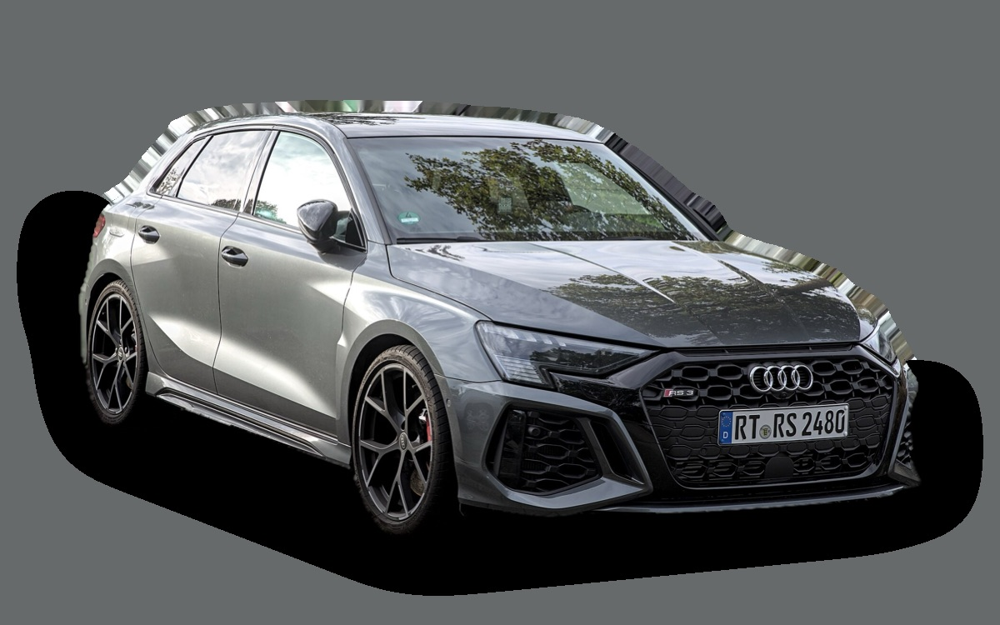

Vad kostar en Audi A3 Sportback per månad?
En Audi A3 Sportback från 2023 kostar cirka 3 849 kr i månaden, allt inräknat.


Månadskostnad per årsmodell
| Årsmodell | Version i beräkningen | Pris | Per månad | Betyg |
|---|---|---|---|---|
| 2026 | 30 TFSI 116, Proline | 332 200 kr | 4 913 kr | C |
| 2023 | 35 TFSI 150 S tronic, Proline | 248 000 kr | 3 849 kr | B |
| 2020 | 35 TFSI 150 S tronic, Proline | 178 000 kr | 3 553 kr | B |
Räknat på 5 års ägande och 1 250 mil per år, med bränslepriser från 2026-10-22. Månadskostnaden innehåller värdeminskning, drivmedel, service och reparationer, försäkring och fordonsskatt.
Så fördelas kostnaden för en 2023:a
- Värdeminskning: 1 395 kr/mån
- Drivmedel: 1 271 kr/mån
- Service och reparationer: 613 kr/mån
- Försäkring: 491 kr/mån
- Fordonsskatt: 77 kr/mån
Leasa eller köpa ny?
Audi Privatleasing erbjuder A3 Sportback Proline 150 hk från 3 695 kr i månaden i 36 månader och 1 000 mil per år. Så mycket kostar det jämfört med att köpa samma bil ny för 359 300 kr och sälja den efter 36 månader, räknat på 1 250 mil per år och 5 procents ränta.
Leasa är billigast 927 kr mindre per månad, 33 372 kr på 36 månader.
| Per månad | Leasa | Köpa |
|---|---|---|
| Leasingavgift, 1 250 mil per år | 3 880 kr | – |
| Uppläggnings- och aviavgift | 73 kr | – |
| Värdeminskning | – | 3 258 kr |
| Ränta på pengarna, 5 % | – | 1 253 kr |
| Service och reparationer | ingår | 369 kr |
| Drivmedel | 1 271 kr | 1 271 kr |
| Försäkring | 583 kr | 583 kr |
| Fordonsskatt | 607 kr | 607 kr |
| Totalt per månad | 6 414 kr | 7 341 kr |
| Totalt på 36 månader | 230 904 kr | 264 276 kr |
Du kör 250 mil mer per år än erbjudandet räknar med. Märkets pris för fler mil: 185 kr i månaden. Audi Privatleasing: A3 Sportback Proline 150 hk, 36 månader, 1 000 mil per år, service ingår, rörlig avgift som följer räntan. Uppläggningsavgift 495 kr och aviavgift 59 kr i månaden. Källa: privatleasing.audi.se, avläst 26 oktober 2026, gäller till och med 31 oktober 2026.
Köpa: 359 300 kr för en ny bil i samma version, och 242 003 kr tillbaka när du säljer den efter 3 år. Restvärdet bygger på annonspriserna för 3 år gamla bilar, justerat för att du kör 3 750 mil på 3 år i stället för typiska 4 500 mil. Räntan är vad pengarna kostar: ränta på ett billån, eller räntan du går miste om på sparade pengar. Drivmedel, försäkring och skatt är desamma. Övermil och onormalt slitage betalas när leasingbilen lämnas tillbaka, och byter du in en köpt bil hos en handlare får du oftast mindre än annonspriset.
Räkna med din egen körsträcka och ränta · Alla leasingbilar jämförda
Begagnatpriser i annonser
| Årsmodell | Medianpris | Annonser | Typiskt miltal |
|---|---|---|---|
| 2026 | 319 000 kr | 9 | 700 mil |
| 2025 | 289 400 kr | 30 | 2 100 mil |
| 2024 | 259 000 kr | 72 | 3 300 mil |
| 2023 | 249 000 kr | 53 | 4 100 mil |
| 2022 | 239 000 kr | 7 | 6 000 mil |
| 2021 | 209 900 kr | 23 | 8 900 mil |
| 2020 | 179 000 kr | 13 | 9 600 mil |
Medianpriset i svenska annonser per årsmodell i oktober 2026 (källa: Blocket). Annonspriser är utgångspriser, och slutpriset kan bli lägre.
Motorer och versioner
| Motor | Drivmedel | Effekt | 0–100 km/h | Förbrukning (WLTP) | Räckvidd | Årsmodeller | Pristillägg |
|---|---|---|---|---|---|---|---|
| 30 TFSI 116 | Bensin | 116 hk | 10,6 s | 5,6 l/100 km | – | från 2020 | – |
| 35 TFSI 150 S tronic | Bensin | 150 hk | 8,4 s | 5,9 l/100 km | – | från 2020 | +27 100 kr |
| 45 TFSI e laddhybrid 272 | Laddhybrid | 272 hk | 6,8 s | 1,8 l/100 km + 13 kWh/100 km | – | från 2020 | +177 400 kr |
| S3 quattro 333 | Bensin | 333 hk | 4,7 s | 7,7 l/100 km | – | 2020–2023 | +229 100 kr |
- Utrustning: Proline, S line (+28 400 kr)
Fakta
- Kaross
- Halvkombi
- Årsmodeller
- sedan 2020
- Nypris från
- 332 200 kr
- Bagage
- 380 liter
- Euro NCAP
- 5 av 5 stjärnor
- Nybilsgaranti
- 3 år
- Driftsäkerhet
- 4,5 av 5
- Helförsäkring, uppskattning
- 7 000 kr/år
- Service, uppskattning
- 4 300 kr/år
Vanliga fel att ha koll på
- DSG-låda DQ200 (mekatronik, koppling), reparation cirka 20 000 kr
- Vattenpump och termostathus i plast läcker, reparation cirka 6 500 kr
- EGR och partikelfilter (TDI), reparation cirka 9 000 kr
- Haldex-pump (fyrhjulsdrift), reparation cirka 7 000 kr
Felen gäller vissa motorer och årsmodeller. I kalkylatorn räknas risken för just den version du väljer.
Fördelar och nackdelar
Fördel
Välbyggd och tyst premium-halvkombi.
Nackdel
Dyr extrautrustning.
Liknande bilar
 Toyota Prius3 719 kr/mån som 2023:a
Toyota Prius3 719 kr/mån som 2023:a Mercedes-Benz A-klass3 675 kr/mån som 2023:a
Mercedes-Benz A-klass3 675 kr/mån som 2023:a Mazda33 668 kr/mån som 2023:a
Mazda33 668 kr/mån som 2023:a Volvo V403 483 kr/mån som 2016:a
Volvo V403 483 kr/mån som 2016:a Renault Megane E-Tech4 225 kr/mån som 2024:a
Renault Megane E-Tech4 225 kr/mån som 2024:a BMW 1-serie3 468 kr/mån som 2023:a
BMW 1-serie3 468 kr/mån som 2023:a
Uppdaterad 2026-10-29 · annonsdata okt 2026